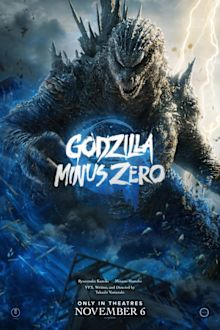
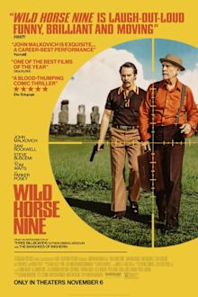
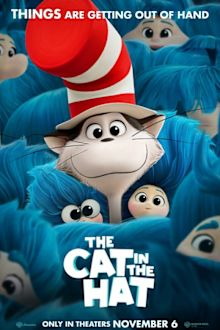
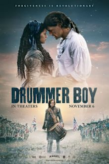

Theaters · Raleigh area · Fri Nov 6 + Sat Nov 7, 2026
Godzilla on Fenton's Axis15 Saturday. Wild Horse Nine at Alamo Friday if Bekah's in.
BLUF: Book Godzilla Minus Zero, Saturday 6:30 on the Axis15 at Paragon Fenton. It's the one that works for both of you: Oscar-winning Minus One director, a family story under the monster, Certified Fresh at 89%, on the best screen in the area. Your pick is Wild Horse Nine, Friday 9:00 at Alamo Raleigh, Martin McDonagh's CIA dark comedy (RT 94%, Metacritic 79), but it's morally murky in a way Bekah usually isn't into, so run the trailer first. The 6:00 Alamo show is nearly sold out both nights. Buy tonight.
Tonight's test
- Book Godzilla, Fenton Axis15, Saturday 6:30. That's the date night either way.
- Watch the official Wild Horse Nine trailer on YouTube together. About 2 minutes.
- If Bekah laughs at Malkovich, book Alamo Friday 9:00 too. If she's flat, it waits for streaming.
- Never saw Godzilla Minus One? Skip Alamo and watch it at home Friday. Minus Zero picks up the same family two years later.
The picks

Godzilla Minus Zero BEKAH'S PICK
2h15m · R · Takashi Yamazaki · Ryunosuke Kamiki, Minami Hamabe, Jun Kunimura · Toho / GKIDS · Japanese, subtitled
1949, two years after Minus One. The Shikishima family gets a second catastrophe, and this time King Ghidorah is in it.
RT 89% Certified Fresh (84 reviews) · Metacritic 74 · Atom 4.2/5 · audience and CinemaScore not in yet
Sequel, but it clears the bar on the filmmaker: Yamazaki wrote, directed and ran the effects, and Minus One won the VFX Oscar with a 99% RT score. Critics say the effects beat Minus One and argue over whether the movie does. Either way, a kaiju film is what the Axis15 is for. Fenton runs it on Axis15 at 6:30 and 9:45 both nights. AMC Holly Springs has it in Dolby Cinema at 7:00 if Fenton sells out. Bekah: good odds. Big crowd-pleaser, a monster she grew up knowing, real human stakes at the center. Subtitles and the R rating are the only risks.

Wild Horse Nine YOUR PICK
1h56m · R · Martin McDonagh · John Malkovich, Sam Rockwell, Steve Buscemi, Tom Waits, Parker Posey · Searchlight
Two CIA lifers take a "vacation" to Easter Island days before the 1973 Chilean coup, and one of them is writing a tell-all memoir.
RT 94% (142 reviews) · Metacritic 79 · Atom 4.1/5 · audience score not posted yet
In Bruges and Banshees director back in his lane: jet-black comedy, chatty violence, a late turn toward feeling. Malkovich won Best Actor at Venice and Awards Radar calls it arguably McDonagh's best. TheWrap dissents and calls it his driest, "a nice way of saying it's dull." Satire about American power with two great actors riffing is your Parasite lane. Not at Fenton. Bekah: risky. Charming men who installed a dictatorship, cynical jokes, political violence. That's the cold, murky stuff she doesn't like, and Primetime proved great reviews don't fix it. Let the trailer decide.
Godzilla Minus Zero
| Theater | Fri 11/6 | Sat 11/7 |
|---|
| Paragon Fenton, Cary (Axis15) | 6:30 · 9:45 | 6:30 · 9:45 |
| Paragon Fenton, Cary (standard) | 8:15 | 8:45 |
| Alamo Drafthouse Raleigh | 6:30 · 7:00 · 8:00 | 6:30 (few left) · 8:00 · 8:30 · 10:00 |
| AMC Dine-In Holly Springs (Dolby Cinema) | 7:00 · 10:15 | 7:00 · 10:15 |
| Regal Crossroads, Cary (IMAX) | 10:15 | 10:15 |
| Regal Crossroads, Cary | 6:40 · 7:10 · 9:55 · 10:25 | 6:40 · 7:10 · 9:55 · 10:25 |
| Regal North Hills, Raleigh | 6:35 · 8:10 · 9:45 | 6:20 · 6:35 · 8:30 · 9:45 |
| Regal White Oak, Garner | 6:10 · 7:10 · 9:30 · 10:25 | 6:10 · 7:10 · 9:30 · 10:25 |
Wild Horse Nine
| Theater | Fri 11/6 | Sat 11/7 |
|---|
| Alamo Drafthouse Raleigh | 6:00 (few left) · 9:00 | 6:00 (few left) · 9:00 |
| AMC Dine-In Holly Springs (Laser at AMC) | 7:30 · 10:30 | 7:30 · 10:30 |
| Regal Crossroads, Cary | 6:35 · 9:35 | 6:35 · 9:35 |
| Regal North Hills, Raleigh | 7:30 · 10:20 | 7:30 · 10:20 |
| Paragon Fenton, Regal White Oak | not playing | not playing |
Evening shows, standard format unless noted. Pulled Thursday from Fandango (Fenton, with format per showtime) and Atom Tickets. If you end up at a Regal, the military discount is box office only with ID.
Skip

The Cat in the Hat SKIP
1h54m · PG · Alessandro Carloni, Erica Rivinoja · Bill Hader, Xochitl Gomez, Quinta Brunson · Warner Bros. Animation
Animated Seuss reboot with Hader as the Cat.
No Metacritic yet · Atom 3.4/5
Bekah's nostalgia lane, but early reviews call it a flat adventure with none of the Seuss style, and tracking sank all week. Doesn't clear the bar.

Drummer Boy SKIP
2h9m · PG · Ben and Joel Smallbone · Joel Smallbone, Lucas Leach, India Brown · Angel Studios
Faith-based Revolutionary War musical drama.
No Metacritic · no Atom rating yet
Angel Studios sermon with muskets. Skip.
Already seen: Primetime, Resident Evil, Toy Story 5. Already planned: You Can See Everything. Also cut: Wildwood (pick two weeks running, still RT 99%, Regal and AMC only, go if you haven't), The Only Living Pickpocket in New York (last week's pick, Alamo 7:30 both nights), La bola negra (Metacritic 86 but a 2h39m Spanish drama, Benny-solo, Alamo), Club Kid (A24, Metacritic 85, listed at Regal Crossroads and North Hills with no showtimes yet), Wicker, Clayface, Street Fighter, Sense and Sensibility, Jimmy, The Last Temptation of Becky, Ramayana. Re-releases: Raise the Red Lantern, plus Alamo's repertory run (The Apartment, Eyes Wide Shut, Tokyo Godfathers).
Next 2-3 weeks
- Ebenezer (Ti West, Johnny Depp, PG-13). Gothic Christmas Carol from the X and Pearl director. Nov 13. Both: horror auteur, a story she grew up with.
- Victorian Psycho (Zachary Wigon, Maika Monroe, Thomasin McKenzie). Gothic governess horror out of Cannes, reviews call it gonzo and obscene in the good way. Nov 13. Benny.
- Paper Tiger (James Gray, Adam Driver, Scarlett Johansson). Russian-mob crime drama, RT 86%, Metacritic high 70s. Nov 13. Benny.
- The Hunger Games: Sunrise on the Reaping (Francis Lawrence). Nov 20. Bekah's lane if reviews hold.
- Hexed (Walt Disney Animation). Nov 25. Bekah, if it clears the bar.
- The Further Mis-Adventures of Cliff Booth (David Fincher, Brad Pitt, Tarantino script). Thanksgiving IMAX-only run before Netflix in December. Benny for sure, likely both.
Sources: Rotten Tomatoes, Metacritic, Atom Tickets, Fandango, Boxoffice Pro, Forbes, TheWrap, Awards Radar, The Numbers, PopCultHQ, Wikipedia. Final version, Nov 5, 2026.